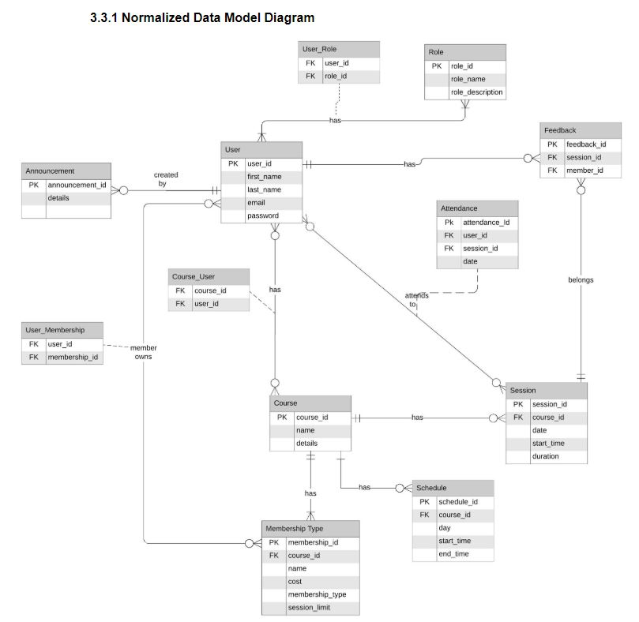

Martial Arts Gym
Information Tracking System
A summary document for the Capstone:
Martial Arts Gym Information Tracking System
Project :
September 2019- March 2020
Team 29: Team Bits
- Yang, Maria Lilian
- Victa, Francis
- Naguit, Sir Angel
- Jacildo, Aldrin John
Presented to: Prof. Shah, Anjana
George Brown College, Computer Programmer Analyst Programme
Documented by: Yang, Maria Lilian
Project Vision
Product Position Statement
For the Martial Arts Gyms that still uses a paper based information tracking system, The Martial Arts Gym Information Tracking System is an automated solution that is reliable, consistent and faster unlike a traditional paper-based information system. It will accurately track session and attendance. It will also store other useful data such as session schedules, instructor’s information, and client’s information in a cloud database resulting in a much secure data storage and improved workflow.
| For: | Martial Arts Gym Owners |
|---|---|
| Who: | Martial Arts Gyms that still uses a paper-based information tracking system |
| The System: | is an automated solution |
| That: | will track data such as sessions and attendance accurately, the system will store useful data such as session schedules, instructor’s information, client’s information and many more |
| Unlike: | a traditional paper-based information system |
| Our product: | will improve the workflow of the Gym and will help increase its productivity |
Business Opportunity
There are a couple of business opportunities that have been identified.
First, small gyms such as Martial Arts Gyms (MAGs) usually does not keep copies of digital records of its instructors, students and classes offered to students. The digital records include user profiles, membership types and other personal information. Second, the MAGs does not currently have a way to track a student’s attendance, especially those with membership types that are Limited. Third, there is currently no platform for instructors to communicate to the students any kind of announcements such as cancellation of classes, etc.
Business Requirements
Stakeholder Requirements
- Notes:
- In a requirement or feature statement,
- “must” means the requirement is mandatory
- “should” means that the requirement is optional
- In an ID cell for the stakeholder requirements table,
- “RA” means that is a Requirement for Administrator User.
- “RI” means that is a Requirement for Instructor User.
- “RM” means that is a Requirement for Member User.
| ID | Requirement | Stakeholder |
|---|---|---|
| RA_01 | The system administrator must be able to add, view, edit and delete courses. | Product Owner, Project Sponsor |
| RA_02 | The system administrator must be able to add, view, edit and delete instructors. | Product Owner, Project Sponsor |
| RA_03 | The system administrator must be able to add, view, edit and delete member accounts. | Product Owner, Project Sponsor |
| RA_04 | The system administrator must be able to add, view, edit and delete announcements. | Product Owner, Project Sponsor |
| RA_05 | The system administrator must be able to add, view, edit and delete membership types within courses. | Product Owner, Project Sponsor |
| RA_06 | The system administrator must be able to view session attendance summary. | Product Owner, Project Sponsor |
| RA_07 | The system administrator must be able to enrol and remove instructors and member accounts to or from courses. | Product Owner, Project Sponsor |
| RI_01 | The instructor must be able to activate a session for the members to attend. | Product Owner |
| RI_02 | The instructor must be able to scan a member’s identification (QR code) to add them to a session. | Product Owner |
| RI_03 | The instructor must be able to add, view, edit and delete announcements. | Product Owner |
| RI_04 | The instructor must be able to view course schedule. | Product Owner |
| RI_05 | The instructor must be able to create a new member account. | Product Owner |
| RI_06 | The system instructors must be able to enroll or remove member accounts to or from courses. | Product Owner |
| RM_01 | A user must be able to create a new account. | Product Owner |
| RM_02 | The member must be able to view and enroll in a Course. | Product Owner |
| RM_03 | The member must be able to view announcements posted regarding the session. | Product Owner |
| RM_04 | The member must be able to receive email announcements from the system. | Product Owner |
| RM_05 | The member should be able to send session review / feedback. | Product Owner |
| RM_06 | The member must be able to view and edit their user profile. | Product Owner |
Project Plan
Objectives
To create a web application that automates business processes and solves common problems that small Martial Arts Gyms face in their everyday operations. The project will enable the gym to keep digital records of students’ profiles, monitor the remaining sessions on their account, track their attendance and use modern scanning technologies such as a QR code to submit attendance.
Corporate Goals Addressed
Have an efficient system to handle core business processes. Convert physical files to be stored in digital storage
In Scope:
| Feature | Description |
|---|---|
| 1. Course Manager |
|
| 2. Instructor Manager |
|
| 3. Member Acct. Manager |
|
| 4. Membership Type Manager |
|
| 5. Announcements Manager |
|
| 6. Session Manager |
|
| 7. Session Feedback Feature |
|
| 8. Login and Logout Feature |
|
Out of Scope:
| Feature | Description |
|---|---|
| 1. Payment System | This will manage the transactions made by members when they register for a course |
| 2. Inventory Management | This will store information regarding maintenance of gym equipment |
| 3. Employee Management | This includes scheduling work date for the workers as well as calculating the work hours and their payment |
| 4. Social Management | This includes a social media platform within the system |
| 5. Social Messaging | This system does not include sending messages between the admin, instructors and members. |
| 6. Payroll | This system calculates the salary of each employee |
Deliverables
Milestones
Assumptions
These are the assumptions that are based on the scope, requirements, business processes and stakeholders.
- The system is for small businesses, which is defined as privately owned corporations, partnerships, or sole proprietorships that have fewer employees and/or less annual revenue than a regular-sized business or corporation.
- Every session will have less than 50 members participating at any given day.
- The MAG staff are computer literate.
- The gym member always carries a device or a card that has their QR code for the session check-in.
Dependencies
The following are the internal and external dependencies that will have to be acknowledged and addressed;
- The user must be registered to be able to see the courses in the system.
- The member should pay the membership before they are enrolled in a course by the instructor.
- The user must be enrolled in a course to be able to have a qr code where their course session will be scanned and thus having their attendance tracked.
- The admin or the instructor must be logged in to be able to use the qr scanner.
Analysis & Design
The following are some of what the team has analyzed. The team started with getting the user's use cases. Building from that knowledge the team formed the UML Diagram, logical diagram, data model and data flow diagram. These diagram will help to determine the relationships between the entities and data flow of the whole application.
Some of the following use cases are on the high level side such as for the Instructor and Admin. See the full list of use cases at the end of the use case section.
Use Cases
Full list of Use Cases Identified
UML Diagram
Logical Requirements
Normalized Data Model Diagram
Level 0: Data Flow Diagram
Level 1: Data Flow Diagram
Wireframes
Wireframes helps the team and the client finalize the face or frontend visual mockup of MAGITS System. Thus gives a more clear picture of the application.
Mockup
Click a button on the pdf ui to traverse through the different mock up screens.
Interface Architecture

System Implementation
Semester 1: Sprint 1-4
The following table shows the planning stage for the MAGITS system.
| Major Activity or Milestone | Date Completed | Owner/Reviewer Team Members |
|---|---|---|
| Planning Phase | ||
| Project Start | September 23, 2019 | Project Team |
| Sprint 1: Completion of Project Summary, Project Vision and High Level Requirements | September 30, 2019 | Project Team |
| Sprint 2: Completion of Project Plan and Team Charter | October 07, 2019 | Project Team |
| Presentation 1 | October 14-18, 2019 | Project Team, Instructor |
| Sprint 3: Completion of System Requirements, Analysis and Design | November 4, 2019 | Project Team |
| Sprint 4: Completion of Wireframes/Prototype and Technical Requirements | November 25, 2019 | Project Team |
| Presentation 2 | November 28, 2019 | Project Team, Instructor |
Semester 2: Sprint 5-8
The following document shows the completion dates of the MAGITS functionality.
Status Reports
The following are the status reports in each of the team's phase. In phase 1, much has happened where the team has to swiftly decide how the task should be divided and how problems should be solved.
Sprint 5 & Status Report 1
Period report: Start Date: Jan 06, 2020 | End Date: Jan 19, 2020
- Task breakdown and milestones have been modified to fit 5 phases of deliverables
- There were a number of tasks that were unfinished from first phase/milestone and is moved to Phase 2.
- Every module or manager is divided into 2 parts, the front-end and the back-end. A developer is tasked to do either a back-end or front-end.
- The team has encountered issues such as:
- Dealing with other course activities diminishing the time allotted for the project.
- Less UI mobile responsiveness that diminishes the user experience
- New unfamiliar issues keep popping up with the current backend infrastructure that takes time to fix.
- The team has perceived risks such as:
- Incorrect task finishing time estimation due to unfamiliar risks.
- MongoDB service outage while developing the project.
- UI/UX Design Risk that fails standards due to less experience in dealing with UI/UX development.
Sprint 6 & Status Report 2
Period report: Start Date: Jan 20, 2020 | End Date: Feb 02, 2020
- The team continued working on the Magits Web App.
- Task not finished from the previous phase has been completed
- Most CRUD operations have already been developed
- Project’s Mobile responsiveness is now better than before but still needs more work.
- QR code identification for members is now available.
- The team has encountered issues such as:
- Fetching data that are stored from different collections in the database.
- Heroku billing the project’s hosting.
- The team has perceived risks such as:
- Incorrect task finishing time estimation due to unfamiliar risks.
- MongoDB service outage while developing the project.
- Upcoming Midterm Exams and Lab Exams
Sprint 7
Period report: Start Date: Feb 03, 2020 | End Date: Mar 08, 2020
Demo product presentation
Sprint 8
Period report: Start Date: Mar 9, 2020 | End Date: Mar 20, 2020
Updates after product presentation
Completed Use Cases
Closing remarks:
As any application development the team had bumps here and there. One could say to be able to avoid such problems is to plan well. But not only that but also always expect the unexpected.